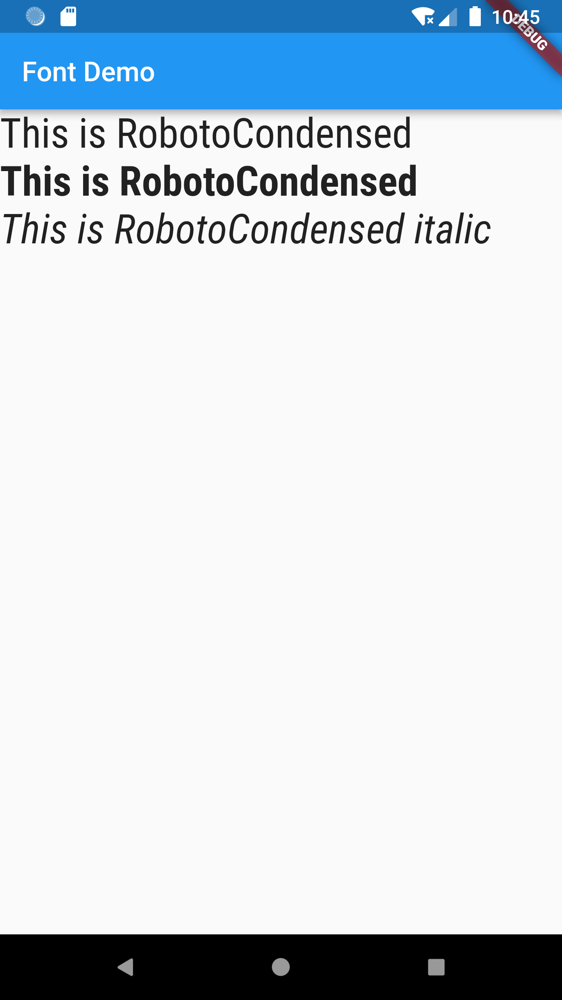
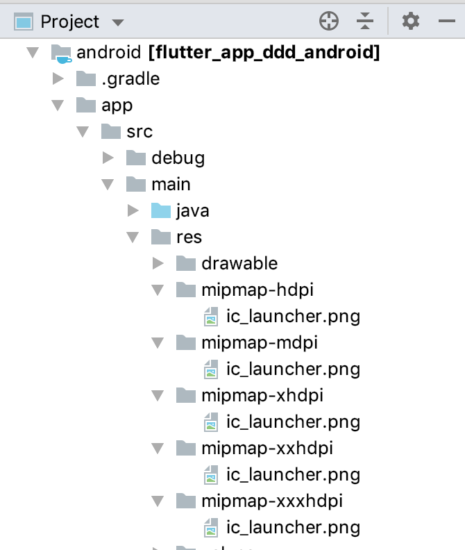
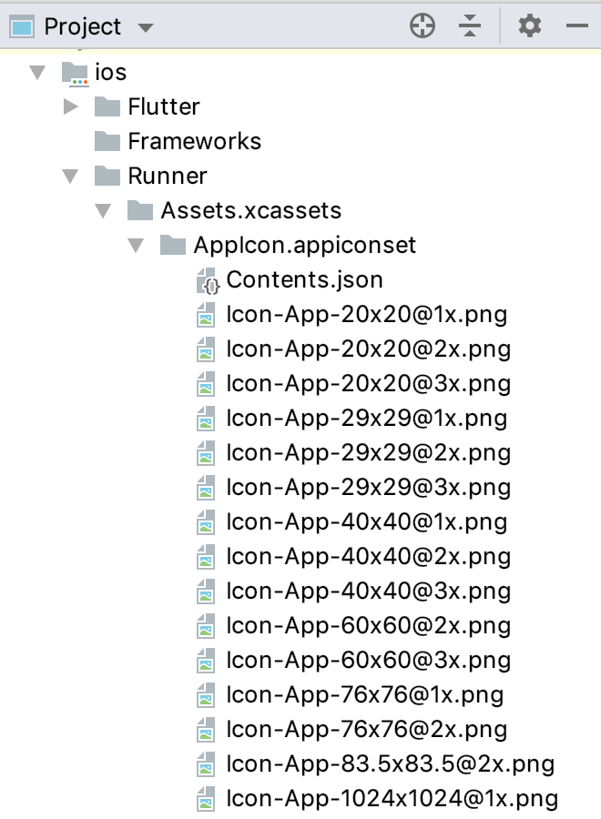
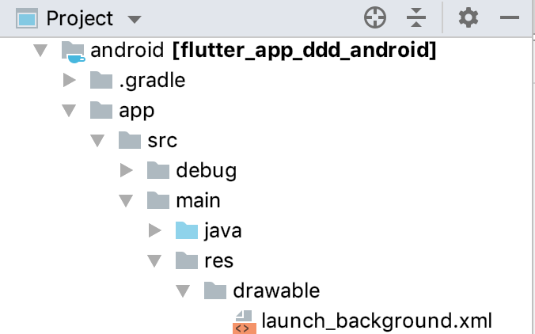
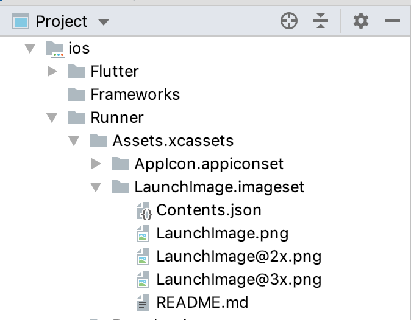

你好，我是陈航。
在上一篇文章中，我与你介绍了 Flutter 的主题设置，也就是将视觉资源与视觉配置进行集中管理的机制。
Flutter 提供了遵循 Material Design 规范的 ThemeData，可以对样式进行定制化：既可以初始化 App 时实现全局整体视觉风格统一，也可以在使用单子 Widget 容器 Theme 实现局部主题的覆盖，还可以在自定义组件时取出主题对应的属性值，实现视觉风格的复用。
一个应用程序主要由两部分内容组成：代码和资源。代码关注逻辑功能，而如图片、字符串、字体、配置文件等资源则关注视觉功能。如果说上一次文章更多的是从逻辑层面分享应该如何管理资源的配置，那今天的分享则会从物理存储入手与你介绍 Flutter 整体的资源管理机制。
资源外部化，即把代码与资源分离，是现代 UI 框架的主流设计理念。因为这样不仅有利于单独维护资源，还可以对特定设备提供更准确的兼容性支持，使得我们的应用程序可以自动根据实际运行环境来组织视觉功能，适应不同的屏幕大小和密度等。
随着各类配置各异的终端设备越来越多，资源管理也越来越重要。那么今天，我们就先看看 Flutter 中的图片、配置和字体的管理机制吧。
资源管理
在移动开发中，常见的资源类型包括 JSON 文件、配置文件、图标、图片以及字体文件等。它们都会被打包到 App 安装包中，而 App 中的代码可以在运行时访问这些资源。
在 Android、iOS 平台中，为了区分不同分辨率的手机设备，图片和其他原始资源是区别对待的：
- iOS 使用 Images.xcassets 来管理图片，其他的资源直接拖进工程项目即可；
- Android 的资源管理粒度则更为细致，使用以 drawable+ 分辨率命名的文件夹来分别存放不同分辨率的图片，其他类型的资源也都有各自的存放方式，比如布局文件放在 res/layout 目录下，资源描述文件放在 res/values 目录下，原始文件放在 assets 目录下等。
而在 Flutter 中，资源管理则简单得多：资源（assets）可以是任意类型的文件，比如 JSON 配置文件或是字体文件等，而不仅仅是图片。
而关于资源的存放位置，Flutter 并没有像 Android 那样预先定义资源的目录结构，所以我们可以把资源存放在项目中的任意目录下，只需要使用根目录下的 pubspec.yaml 文件，对这些资源的所在位置进行显式声明就可以了，以帮助 Flutter 识别出这些资源。
而在指定路径名的过程中，我们既可以对每一个文件进行挨个指定，也可以采用子目录批量指定的方式。
接下来，我以一个示例和你说明挨个指定和批量指定这两种方式的区别。
如下所示，我们将资源放入 assets 目录下，其中，两张图片 background.jpg、loading.gif 与 JSON 文件 result.json 在 assets 根目录，而另一张图片 food_icon.jpg 则在 assets 的子目录 icons 下。
assets├── background.jpg├── icons│ └── food_icon.jpg├── loading.gif└── result.json对于上述资源文件存放的目录结构，以下代码分别演示了挨个指定和子目录批量指定这两种方式：通过单个文件声明的，我们需要完整展开资源的相对路径；而对于目录批量指定的方式，只需要在目录名后加路径分隔符就可以了：
flutter: assets: - assets/background.jpg # 挨个指定资源路径 - assets/loading.gif # 挨个指定资源路径 - assets/result.json # 挨个指定资源路径 - assets/icons/ # 子目录批量指定 - assets/ # 根目录也是可以批量指定的需要注意的是，目录批量指定并不递归，只有在该目录下的文件才可以被包括，如果下面还有子目录的话，需要单独声明子目录下的文件。
完成资源的声明后，我们就可以在代码中访问它们了。在 Flutter 中，对不同类型的资源文件处理方式略有差异，接下来我将分别与你介绍。
对于图片类资源的访问，我们可以使用 Image.asset 构造方法完成图片资源的加载及显示，在第 12 篇文章“经典控件（一）：文本、图片和按钮在 Flutter 中怎么用？”中，你应该已经了解了具体的用法，这里我就不再赘述了。
而对于其他资源文件的加载，我们可以通过 Flutter 应用的主资源 Bundle 对象 rootBundle，来直接访问。
对于字符串文件资源，我们使用 loadString 方法；而对于二进制文件资源，则通过 load 方法。
以下代码演示了获取 result.json 文件，并将其打印的过程：
rootBundle.loadString('assets/result.json').then((msg)=>print(msg));与 Android、iOS 开发类似，Flutter 也遵循了基于像素密度的管理方式，如 1.0x、2.0x、3.0x 或其他任意倍数，Flutter 可以根据当前设备分辨率加载最接近设备像素比例的图片资源。而为了让 Flutter 更好地识别，我们的资源目录应该将 1.0x、2.0x 与 3.0x 的图片资源分开管理。
以 background.jpg 图片为例，这张图片位于 assets 目录下。如果想让 Flutter 适配不同的分辨率，我们需要将其他分辨率的图片放到对应的分辨率子目录中，如下所示：
assets├── background.jpg //1.0x 图├── 2.0x│ └── background.jpg //2.0x 图└── 3.0x └── background.jpg //3.0x 图而在 pubspec.yaml 文件声明这个图片资源时，仅声明 1.0x 图资源即可：
flutter: assets: - assets/background.jpg #1.0x 图资源1.0x 分辨率的图片是资源标识符，而 Flutter 则会根据实际屏幕像素比例加载相应分辨率的图片。这时，如果主资源缺少某个分辨率资源，Flutter 会在剩余的分辨率资源中选择最低的分辨率资源去加载。
举个例子，如果我们的 App 包只包括了 2.0x 资源，对于屏幕像素比为 3.0 的设备，则会自动降级读取 2.0x 的资源。不过需要注意的是，即使我们的 App 包没有包含 1.0x 资源，我们仍然需要像上面那样在 pubspec.yaml 中将它显示地声明出来，因为它是资源的标识符。
字体则是另外一类较为常用的资源。手机操作系统一般只有默认的几种字体，在大部分情况下可以满足我们的正常需求。但是，在一些特殊的情况下，我们可能需要使用自定义字体来提升视觉体验。
在 Flutter 中，使用自定义字体同样需要在 pubspec.yaml 文件中提前声明。需要注意的是，字体实际上是字符图形的映射。所以，除了正常字体文件外，如果你的应用需要支持粗体和斜体，同样也需要有对应的粗体和斜体字体文件。
在将 RobotoCondensed 字体摆放至 assets 目录下的 fonts 子目录后，下面的代码演示了如何将支持斜体与粗体的 RobotoCondensed 字体加到我们的应用中：
fonts: - family: RobotoCondensed # 字体名字 fonts: - asset: assets/fonts/RobotoCondensed-Regular.ttf # 普通字体 - asset: assets/fonts/RobotoCondensed-Italic.ttf style: italic # 斜体 - asset: assets/fonts/RobotoCondensed-Bold.ttf weight: 700 # 粗体这些声明其实都对应着 TextStyle 中的样式属性，如字体名 family 对应着 fontFamily 属性、斜体 italic 与正常 normal 对应着 style 属性、字体粗细 weight 对应着 fontWeight 属性等。在使用时，我们只需要在 TextStyle 中指定对应的字体即可：
Text("This is RobotoCondensed", style: TextStyle( fontFamily: 'RobotoCondensed',// 普通字体));Text("This is RobotoCondensed", style: TextStyle( fontFamily: 'RobotoCondensed', fontWeight: FontWeight.w700, // 粗体));Text("This is RobotoCondensed italic", style: TextStyle( fontFamily: 'RobotoCondensed', fontStyle: FontStyle.italic, // 斜体));
原生平台的资源设置
在前面的第 5 篇文章“从标准模板入手，体会 Flutter 代码是如何运行在原生系统上的”中，我与你介绍了 Flutter 应用，实际上最终会以原生工程的方式打包运行在 Android 和 iOS 平台上，因此 Flutter 启动时依赖的是原生 Android 和 iOS 的运行环境。
上面介绍的资源管理机制其实都是在 Flutter 应用内的，而在 Flutter 框架运行之前，我们是没有办法访问这些资源的。Flutter 需要原生环境才能运行，但是有些资源我们需要在 Flutter 框架运行之前提前使用，比如要给应用添加图标，或是希望在等待 Flutter 框架启动时添加启动图，我们就需要在对应的原生工程中完成相应的配置，所以下面介绍的操作步骤都是在原生系统中完成的。
我们先看一下如何更换 App 启动图标。
对于 Android 平台，启动图标位于根目录 android/app/src/main/res/mipmap 下。我们只需要遵守对应的像素密度标准，保留原始图标名称，将图标更换为目标资源即可：

对于 iOS 平台，启动图位于根目录 ios/Runner/Assets.xcassets/AppIcon.appiconset 下。同样地，我们只需要遵守对应的像素密度标准，将其替换为目标资源并保留原始图标名称即可：

然后。我们来看一下如何更换启动图。
对于 Android 平台，启动图位于根目录 android/app/src/main/res/drawable 下，是一个名为 launch_background 的 XML 界面描述文件。

我们可以在这个界面描述文件中自定义启动界面，也可以换一张启动图片。在下面的例子中，我们更换了一张居中显示的启动图片：
<?xml version="1.0" encoding="utf-8"?><layer-list xmlns:android="http://schemas.android.com/apk/res/android"> <!-- 白色背景 --> <item android:drawable="@android:color/white" /> <item> <!-- 内嵌一张居中展示的图片 --> <bitmap android:gravity="center" android:src="@mipmap/bitmap_launcher" /> </item></layer-list>而对于 iOS 平台，启动图位于根目录 ios/Runner/Assets.xcassets/LaunchImage.imageset 下。我们保留原始启动图名称，将图片依次按照对应像素密度标准，更换为目标启动图即可。

总结
好了，今天的分享就到这里。我们简单回顾一下今天的内容。
将代码与资源分离，不仅有助于单独维护资源，还可以更精确地对特定设备提供兼容性支持。在 Flutter 中，资源可以是任意类型的文件，可以被放到任意目录下，但需要通过 pubspec.yaml 文件将它们的路径进行统一地显式声明。
Flutter 对图片提供了基于像素密度的管理方式，我们需要将 1.0x，2.0x 与 3.0x 的资源分开管理，但只需要在 pubspec.yaml 中声明一次。如果应用中缺少对于高像素密度设备的资源支持，Flutter 会进行自动降级。
对于字体这种基于字符图形映射的资源文件，Flutter 提供了精细的管理机制，可以支持除了正常字体外，还支持粗体、斜体等样式。
最后，由于 Flutter 启动时依赖原生系统运行环境，因此我们还需要去原生工程中，设置相应的 App 启动图标和启动图。
思考题
最后，我给你留下两道思考题吧。
- 如果我们只提供了 1.0x 与 2.0x 的资源图片，对于像素密度为 3.0 的设备，Flutter 会自动降级到哪套资源？
- 如果我们只提供了 2.0x 的资源图片，对于像素密度为 1.0 的设备，Flutter 会如何处理呢？
你可以参考原生平台的经验，在模拟器或真机上实验一下。
欢迎你在评论区给我留言分享你的观点，我会在下一篇文章中等待你！感谢你的收听，也欢迎你把这篇文章分享给更多的朋友一起阅读。

COMMUNITY NOTES
读者评论
1. 使用2.0x图片，优先使用和当前像素密度相近的资源2.找2.0x图片，按分辨率由低到高找
对于像素密度3.0x的会找到2.0x的图片，对于2.0x的像素密度，1.0会自动压缩处理
老师，批量声明报错 是什么原因啊？
1、1.0x，因为3.0x的资源不存在，所以在存在的资源中查找分别率最低的资源，即1.0x；2、2.0x，因为1.0x的资源不存在，找剩下的分辨率最低的，只有2.0x，所以选择2.0x；
Flutter这种资源声明跟引用感觉比Android要麻烦复杂很多
老师你好，做项目的时候图片目录结构应该怎么设计？是根据组件新建文件夹，还是统一放在一个目录下？
两个答案都是2.0x